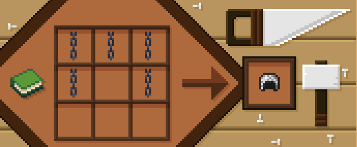
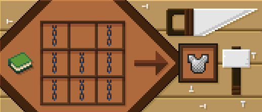

Better Crafts
Better Crafts improves Minecraft survival by adding new recipes and useful quality of life improvements.

About
Better Crafts is a datapack that adds new crafting recipes while keeping the vanilla Minecraft experience.
The goal is to improve survival gameplay by making some items easier to obtain.
Features
Custom Recipes
Adds new crafting recipes for blocks, items and useful resources.
Vanilla Friendly
Designed to fit naturally into Minecraft progression.
Recipes
All Recipes
Arrow Bundle NEW
enable/arrow_bundle
disable/arrow_bundle

Bell NEW
enable/bell
disable/bell

Budding Amethyst NEW
enable/budding_amethyst
disable/budding_amethyst

Chainmail Helmet
enable/chainmail_armor
disable/chainmail_armor

Chainmail Chestplate
enable/chainmail_armor
disable/chainmail_armor

Chainmail Leggings
enable/chainmail_armor
disable/chainmail_armor

Chainmail Boots
enable/chainmail_armor
disable/chainmail_armor

Coal Block
enable/coal_block
disable/coal_block

Cobweb
enable/cobweb
disable/cobweb

Crying Obsidian
enable/crying_obsidian
disable/crying_obsidian

enable/
disable/
Commands
General
Admin
Compatibility
| Version | Status |
|---|---|
| 1.21.11 | Supported |
| 26.1.x | Supported |
| 26.2 | Supported |
| 26.3snapshot-1 to 5 | Supported |
Installation
1. Download the datapack.
2. Place it inside the datapacks folder.
3. Run /reload.
4. Enjoy Better Crafts.
FAQ
Does it work on servers?
Yes, Better Crafts works on multiplayer servers.
Does it require a resource pack?
No, the datapack works without any resource pack.